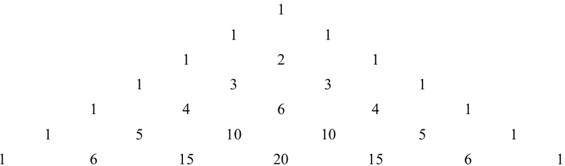
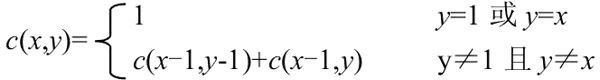

首页 > 编程笔记
Python实现杨辉三角（2种实现方案）
杨辉三角形，又称贾宪三角形、帕斯卡三角形，是二项式系数在三角形中的一种几何排列。
下图显示了杨辉三角的前 7 行：
从杨辉三角形的特点出发，可以总结出：
将这些特点提炼成数学公式，则位于杨辉三角第 x 行第 y 列的值为：
根据上面的分析，完整的程序如下：
先定义二维数组 a[N][N]，N 为常量，大于要打印的行数 n。再将每行的第一个数和最后一个数赋值为 1，即 a[i][1]=a[i][i]=1。除了每行的第一个数和最后一个数以外，每行上的其他数都为其肩上的两数之和，即 a[i][j]=a[i-1][j-1]+a[i-1][j]。
第 1 行打印 3(n-1) 个空格，第 2 行打印 3(n-2) 个空格.....第 k 行打印 3(n-k)个空格。
下图显示了杨辉三角的前 7 行：

递归打印杨辉三角
杨辉三角形中的数，正是(x+y)的 N 次方幂展开式各项的系数，下面以递归的方法来打印杨辉三角形。从杨辉三角形的特点出发，可以总结出：
- 第 x 行有 x 个值（设起始行为第1行）。
- 对于第 x 行的第 y（y>=3）个值，有：当 y=1 或 y=x 时，其值为 1；当 y!=1 且 y!=x 时，其值为第 x-1 行的第 y-1 个值与第 x-1 行的第 y 个值之和。
将这些特点提炼成数学公式，则位于杨辉三角第 x 行第 y 列的值为：

根据上面的分析，完整的程序如下：
def triangles(x, y):
if y == 1 or y == x: # y=1或y=x时，函数返回值为1
return 1
else:
z = triangles(x-1, y-1) + triangles(x-1, y) # y为其他值时的递推公式
return z
if __name__ == "__main__":
n = int(input("请输入杨辉三角的行数："))
for i in range(1, n+1): # 输出n行
for j in range(0, n-i+1):
print(" ", end=" ")
for j in range(1, i+1):
# 调用递归函数，输出第i行的第j个值
print("%6d " %(triangles(i, j)), end=" ")
print()
运行结果为：
请输入杨辉三角的行数：7
1
1 1
1 2 1
1 3 3 1
1 4 6 4 1
1 5 10 10 5 1
1 6 15 20 15 6 1
二维数组打印杨辉三角形
由于位于杨辉三角形两个腰上的数都为 1，其他位置上的数等于它肩上两个数之和，基于杨辉三角形的这个特点，就可以使用二维数组打印出杨辉三角形。先定义二维数组 a[N][N]，N 为常量，大于要打印的行数 n。再将每行的第一个数和最后一个数赋值为 1，即 a[i][1]=a[i][i]=1。除了每行的第一个数和最后一个数以外，每行上的其他数都为其肩上的两数之和，即 a[i][j]=a[i-1][j-1]+a[i-1][j]。
1) 计算杨辉三角形中的数值并存入二维数组
定义 row 和 column 两个变量分别代表杨辉三角形的行和列，变量 n 表示要打印的行数。
# 计算杨辉三角中的数值并存入二维数组a中
for row in range(1, n+1):
# 令每行两边的数为1，循环从1开始，每行第一个数存放在a[row][1]中
a[row][1] = a[row][row] = 1
for row in range(3, n+1):
for column in range(2, (row-1)+1):
# 计算其他位置的值并存入二维数组
a[row][column] = a[row-1][column-1] + a[row-1][column]
2) 打印空格
在每行输出之前，先打印空格占位，可使输出更美观。第 1 行打印 3(n-1) 个空格，第 2 行打印 3(n-2) 个空格.....第 k 行打印 3(n-k)个空格。
for row in range(1, n+1):
for k in range(1, (n-row)+1):
print(" ", end="")
3) 打印杨辉三角形中的数
输出杨辉三角形每一行之前都先打印空格，之后再使用下面的代码输出每行中的数值。
# 打印杨辉三角形
for row in range(1, n+1):
for k in range(1, (n-row)+1):
print(" ", end="") # 在每行输出数之前先打印空格占位，使输出更美观
# column<=row表示不输出数组中其他的数，只输出所需的数
for column in range(1, row+1):
print("%6d" %(a[row][column]), end=" ")
print() # 当一行输出完以后换行继续下一行的输出
现在我们就需要把刚才的程序进行组合，构成完整的程序：
if __name__ == "__main__":
n = 0
a = [([0] * 14) for i in range(14)] # 定义一个行为14、列为14的二维数组
while n <= 0 or n >= 13: # 控制打印的行数，行数过大会造成显示不规范
n = int(input("请输入杨辉三角的行数："))
print("打印 %d 行杨辉三角如下：" %n)
# 计算杨辉三角中的数值并存入二维数组a中
for row in range(1, n+1):
# 令每行两边的数为1，循环从1开始，每行第一个数存放在a[row][1]中
a[row][1] = a[row][row] = 1
for row in range(3, n+1):
for column in range(2, (row-1)+1):
# 计算其他位置的值并存入二维数组
a[row][column] = a[row-1][column-1] + a[row-1][column]
# 打印杨辉三角形
for row in range(1, n+1):
for k in range(1, (n-row)+1):
print(" ", end="") # 在每行输出数之前先打印空格占位，使输出更美观
# column<=row表示不输出数组中其他的数，只输出所需的数
for column in range(1, row+1):
print("%6d" %(a[row][column]), end=" ")
print() # 当一行输出完以后换行继续下一行的输出
运行结果为：
请输入杨辉三角的行数：7
打印 7 行杨辉三角如下：
1
1 1
1 2 1
1 3 3 1
1 4 6 4 1
1 5 10 10 5 1
1 6 15 20 15 6 1
关注公众号「站长严长生」，在手机上阅读所有教程，随时随地都能学习。内含一款搜索神器，免费下载全网书籍和视频。

微信扫码关注公众号